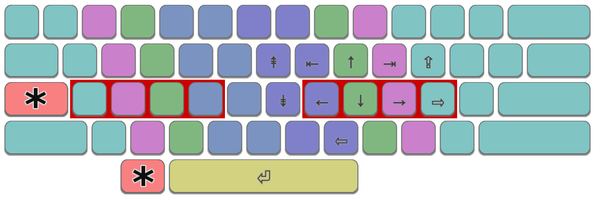

The Extend Layer provides an additional layer of mappings for your keys by defining a new "Extend" modifier key. Holding down this key activates "Extend" mode and provides navigation and editing functions using keys in the main body of the keyboard. The key chosen to be mapped as the Extend key is up to you. Many people choose CapsLock; Left Alt is also an excellent choice.
One of the most common tasks on a computer is navigating around and editing a document. This means frequent use of keys such as arrows, home/end, page up/down, and cut/copy/paste. Most of these keys are some distance away from the home position, causing a lot of extra motion, especially for the right hand. This frequent movement makes it more likely to lose your home position, make errors, or become slow.
The Extend Layer aims to keep your hands over the main body of the keyboard, by providing the most common editing features as close as possible to your home key fingers. Because your hands remain in the home position, you can make rapid edits without needing to look down at the keyboard.

A simple, minimal Extend layer providing arrow keys, home/end, page up/down on intuitive and easy-to-reach keys for the right hand. Extend mode is activated by pressing a specifically configured key, the most common options are indicated with an asterisk (i.e. LeftAlt or CapsLock).
Extend is the most powerful of the mods presented here. Those who start using it find it indispensable within a short space of time. The intuitive pattern of navigation keys makes it both effective and easy to learn.
Here are some example implementations. Most of these provide a wide range features in addition to navigation, including text selection, cut/copy/paste, plus browser and mouse functions.
DreymaR's Extend Layer for Linux/XKB and Windows/PKL.